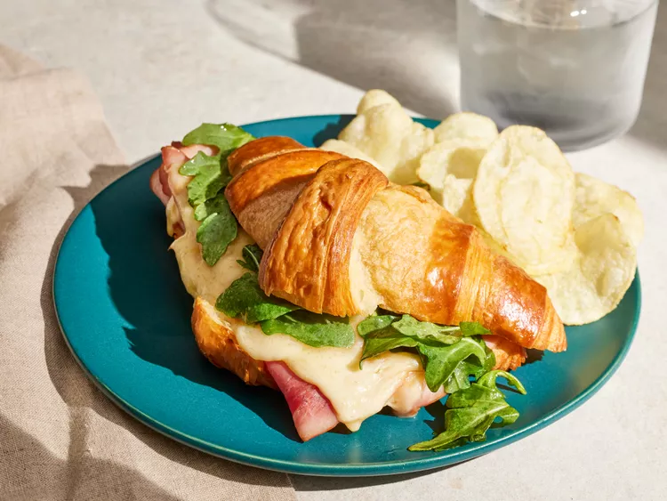
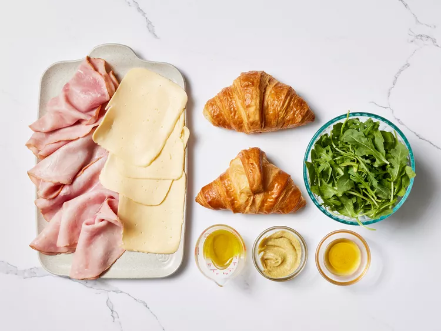
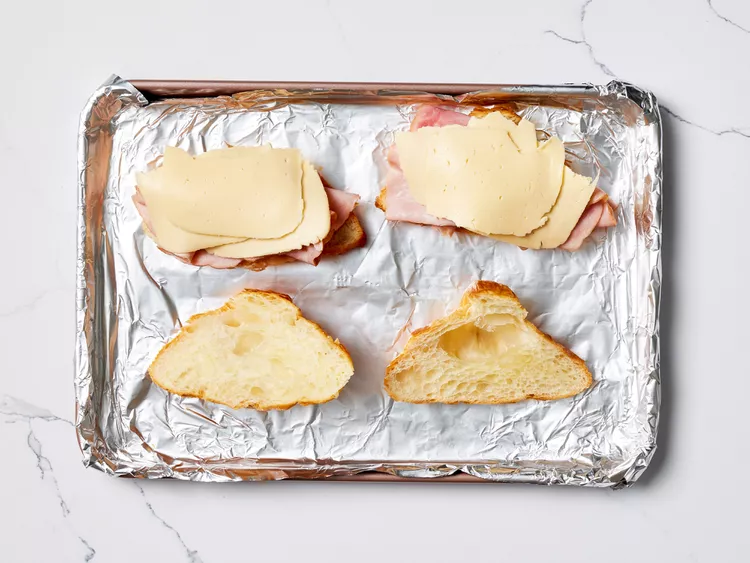
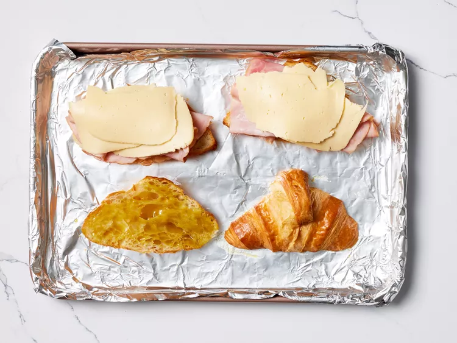
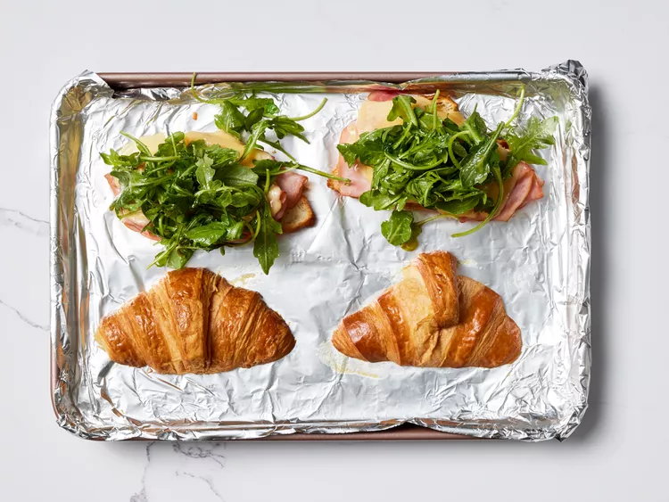

The Ultimate Croissant Sandwich

Description
The ultimate croissant sandwich is this oven-toasted croissant with melted Havarti cheese, deli ham, fresh arugula, and a light honey Dijon dressing.
Ingredients
- 2 large croissants, split
- 6 slices deli ham (such as Boar’s Head®)
- 4 (3/4 ounce) slices Havarti cheese
- 2 tablespoons olive oil
- 2 teaspoons Dijon mustard
- 2 teaspoons honey
- 1 cup loosely packed baby arugula
Directions
Step 1
Gather all ingredients.

Step 2
Preheat the oven to 350 degrees F (175 degrees C). Line a large rimmed baking sheet with aluminum foil; set aside.
Step 3
Place bottom of each croissant, cut side up, on a baking sheet. Layer 3 of the ham slices and 2 of the Havarti slices over each croissant bottom.

Step 4
Whisk together olive oil, Dijon, and honey in a small mixing bowl until fully combined. Evenly brush top half of each croissant with about 1/2 teaspoon of olive oil mixture. Place top of each croissant, cut side down, on prepared baking sheet.

Step 5
Bake in the preheated oven until Havarti is melted and ham is heated through, 5 to 7 minutes.
Step 6
Meanwhile, toss arugula and remaining olive oil mixture in a medium bowl until evenly coated. Remove croissants from oven. Top melted Havarti layer evenly with dressed arugula and croissant tops. Serve immediately.
